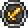
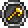
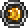
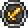
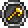
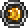

The Wall of Flesh is a towering wall that spans the entire screen height. It has 8,000 / 11,200 / 14,280 health. It is summoned by throwing a Guide Voodoo Doll into a pool of lava while the Guide is alive. It is the final boss of pre-Hardmode, because defeating it will irreversibly enable Hardmode in the world. It can drop several powerful items, one of them being the guaranteed drop Pwnhammer which can be used to break Demon Altars or Crimson Altars in order to spawn various game-advancing Hardmode ores. Upon summoning the Wall of Flesh, the player will be afflicted with the Horrified debuff, which prevents fleeing from the battle – any attempt to do so will result in severe damage via The Tongue or instant death if the player tries to teleport away, and the debuff will not be removed until either the player or the Wall of Flesh is killed. The Wall of Flesh will then sweep across the map, moving faster as its HP gets lower. It must be killed before it reaches the end of the map, otherwise it will despawn and any living players in the Underworld will instantly die. Additionally, the Wall of Flesh's eyes fire lasers, with the rate of fire increasing as it takes damage. Its mouth burps Leeches that will chase the player, and it has small mouths attached to it called The Hungry, which will also move toward and damage the player. In Expert Mode, the Wall of Flesh will greatly increase its movement speed as its health decreases, eventually surpassing even players riding the Bunny Mount or horse mounts in movement speed. The Hungry will rapidly respawn, thus seemingly blocking the wall from attacks, and can deal significant damage themselves. The faster the Wall of Flesh moves and the quicker The Hungry respawn, the more the player will have to focus on dealing damage and moving across a decent terrain.


HP:8000
DAMAGE:50
AI: comes at you angrly
Breaker Blade
 Clockwork Assault Rifle
Clockwork Assault Rifle
 Laser Rifle
Laser Rifle
 Firecracker
Firecracker
 

One Emblem